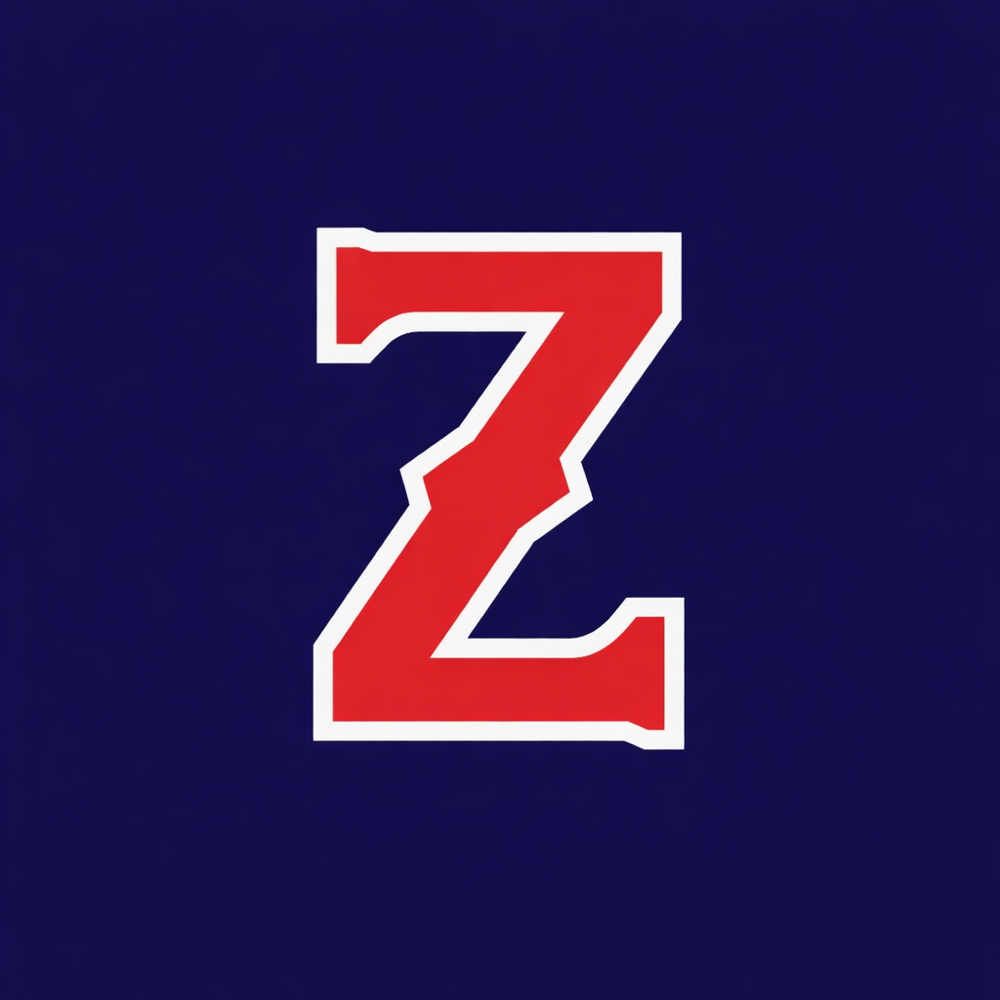

Free & Open Source Software
FOSS Builder
Connector · Ecosystem Architect
I'm
Zaal
— founder of
The ZAO
, co-founder of
WaveWarZ
.
Building creator infrastructure in public.
73+ open-source repos
.

bettercallzaal.com
@bettercallzaal